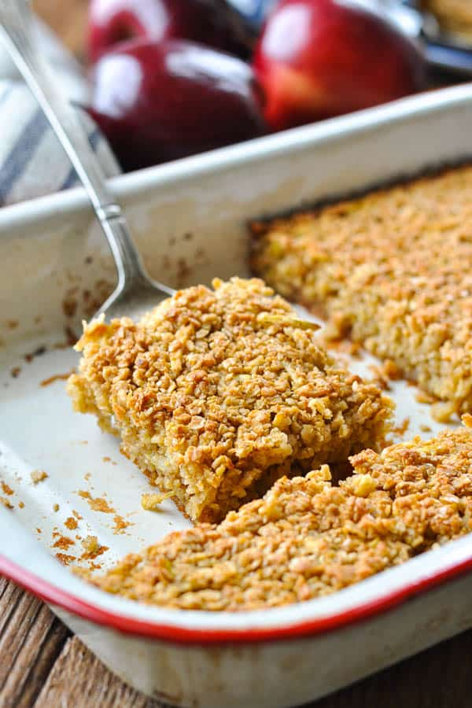

Baked Oatmeal

Breakfast in 30 minutes
A delicious, filling breakfast is only a 30 minutes and a few ingredients away. Add whatever you fancy: walnuts, raisins, dried cranberries, blueberries, bananas, chocolate chips.. the list goes on.
- 1/2 cup cooking oil
- 1/2 cup sugar
- 2 eggs
- 3 cups quick oats
- 2 tsp salt
- 2 tsp baking powder
- 1 cup milk
- 2 tsp vanilla
- Preheat oven to 350 degrees.
- In a large bowl, combine oil, sugar, and the eggs.
- In a separate bowl, combine oats, salt, and baking powder.
- Add dry to wet ingredients. Add milk, vanilla, and any other mix-ins you desire.
- Pour into 9"x13" pan.
- Bake for 30 mintues.
- Serve with warm milk poured on top.